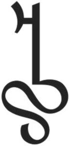

Trade Mark Journal No.2025/029 18 July 2025
WO0000001862021 (21,25,32,33,40,43)
Office of origin: Switzerland
Date of International Registration:27 March 2025
Date of designation in the UK:
27 March 2025

International priority date claimed: 14 November 2024
(Switzerland)
(824771)
- Class 21
- Household and kitchen utensils and containers; cooking utensils and crockery, except knives, forks and spoons; unworked or semi-worked glass, except building glass; glassware, porcelain and earthenware; carafs and decanters of glass; glass bottles and drinking glasses.
- Class 25
- Clothing; footwear; headwear.
- Class 32
- Beers; alcohol-free beers; beverages not containing alcohol; non-alcoholic grape-based beverages (alternative to wine); grape-based alcohol-free beverages (alternative to wine); non-alcoholic wines; non-alcoholic flavored beverages; flavored sparkling waters; fruit beverages and fruit juices; grape juice and spritzer (alcohol-free); syrups and other non-alcoholic preparations for making beverages.
- Class 33
- Alcoholic beverages, except beers; wines; low alcohol wines; flavored wines.
- Class 40
- Custom production of wines, low alcohol wines, flavored wines and non-alcoholic and non-alcoholic grape-based beverages (alternative to wine); custom production of non-alcoholic beverages; services of a custom press.
- Class 43
- Restaurant (food) services; accommodation services; catering for clients in a bar, a restaurant or a hotel; provision of beverages in restaurants, bars or hotels; bar services; restaurant, bar or hotel services.
AMESCO AG
Representative: TIMES Attorneys, Feldeggstrasse 12, CH-8024 Zürich, SWITZERLAND